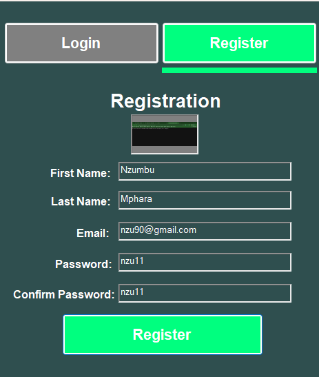

Tailor Made Tailor
Collaborative Project with Second-Year Classmates
In a dynamic team environment, we collaborated to develop an innovative software solution aimed at streamlining the process of ordering school uniforms for local schools. Our system was designed to tackle the common challenges of urgent uniform needs and fluctuating stock availability, ensuring that schools could efficiently manage their inventory and meet students' requirements in a timely manner. The project was developed using Visual Studio.
Learn more

Messaging App
Collaborative Project with Third-Year Classmates
In this project, our team was entrusted with the development of a sophisticated communication app tailored for a company’s internal use. We meticulously designed the network infrastructure of the company’s building using TCP/IP protocols, ensuring seamless connectivity and efficient data flow. Utilizing Cisco Packet Tracer, we simulated the network layout to optimize performance and troubleshoot potential issues. Throughout the project, I collaborated closely with my classmates to ensure that we met all the technical and functional requirements. We used Visual Studio for the app’s development, Cisco Packet Tracer for network design, and GitHub for version control and collaborative coding, successfully delivering a robust and reliable communication solution.
Project Link